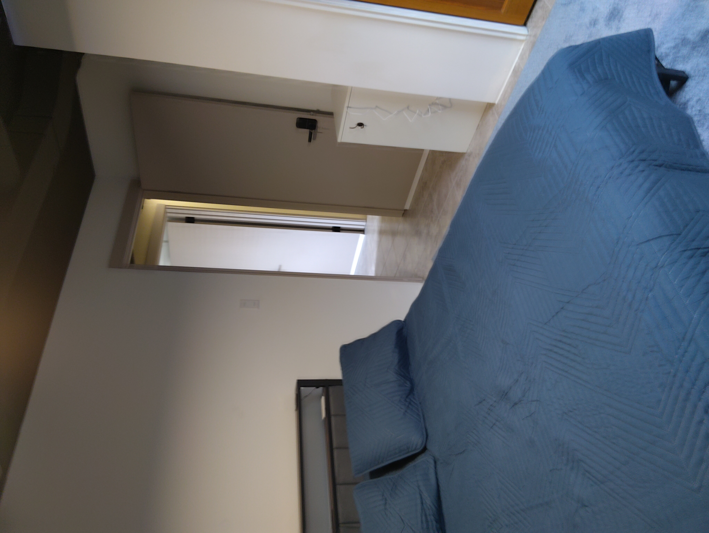
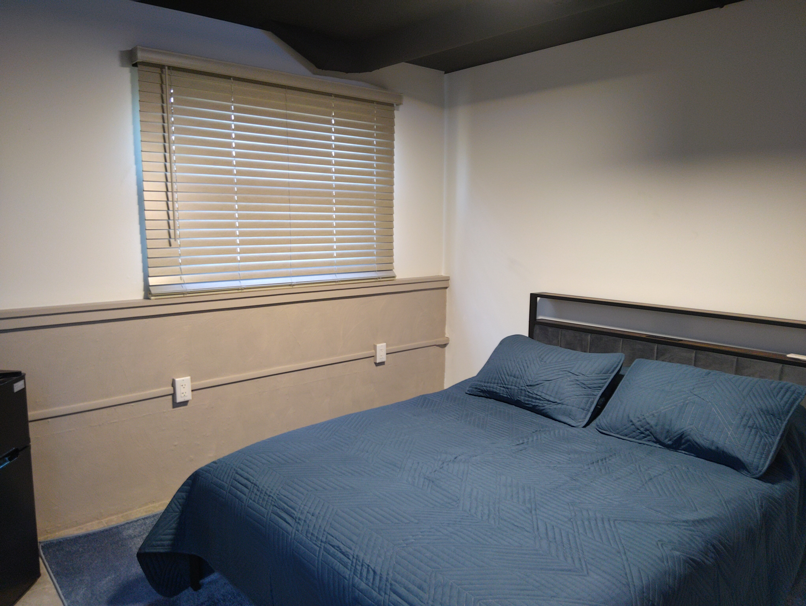
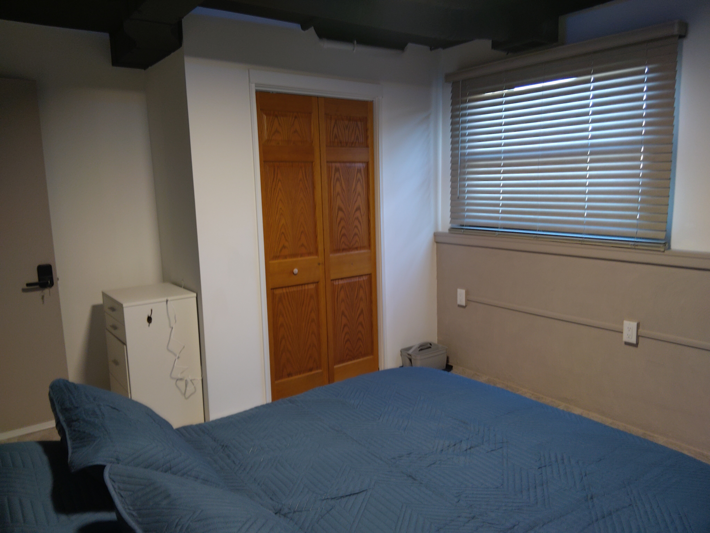

Blue Room
The Blue Room is designed to be a comfortable, private space within the shared home — a place where you can unwind, focus, and feel settled.
Each room includes a firm memory foam queen-sized bed with built-in headboard lighting and convenient power outlets, making it easy to relax, read, or stay connected without extra clutter.
You will have a dedicated laptop desk that can also function as a makeup vanity, along with a well-appointed closet complete with hangers and a laundry basket to keep your space organized.
For everyday convenience, the room also includes a TV, mini fridge, and thoughtful extras like a shower caddy and boot tray — making it easy to move comfortably between your room and the shared spaces.
The Blue Room is located on the lower level and is the most compact bedroom in the house, offering a cozy, tucked-in feel that works especially well for someone who prefers a quieter, more private space.
Room Highlights
This is your personal space within the house: quiet, functional, and intentionally set up so you can settle in quickly and feel at home.
Price: $250/week or $850/month


